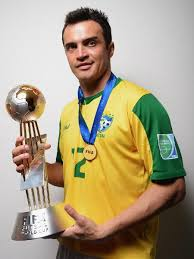

Início
Passagens

Dentre os diversos títulos que Falcão já conquistou, estão:
- Campeonato Mundial da FIFA: Campeão em 2008 e 2012
- Copa América de Futsal: Vencedor em 2000,2008 e 2011
- Pan-American Games: Medalha de ouro em 2007.
- Copa Libertadores de Futsal: Conquistou várias vezes com diferentes clubes.
- Copa Intercontinental de Futsal: Vencedor em 2016 e 2018.
- Liga Nacional de Futsal: Diversos títulos ao longo de sua carreira.
- Taça Brasil de Futsal: Diversos títulos.
- Superliga de Futsal: Diversos títulos.
- Supercopa do Brasil de Futsal: Vencedor em 2018.
Reconhecimentos Individuais:
- Eleito Melhor Jogador de Futsal do Mundo pela FIFA em 2004, 2008, 2011 e 2012.
- Maior artilheiro da história da Seleção Brasileira de futsal, com 401 gols marcados.
- Maior goleador mundial entre todas as seleções de esportes ligados ao futebol, com 401 gols feitos.